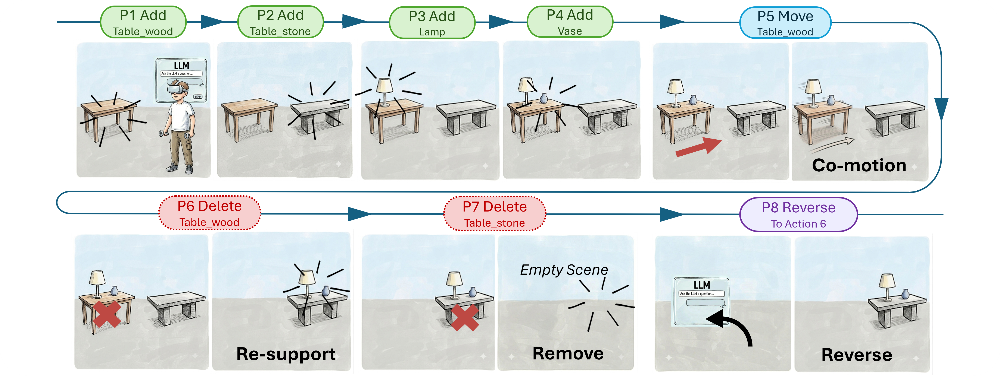
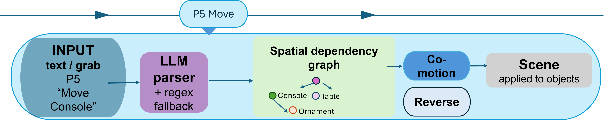
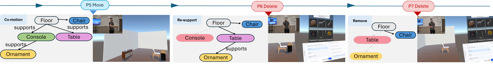

Spatial Dependency Graphs enable AI-assisted XR authoring systems to preserve inter-object relationships while scenes are created, modified, deleted, and reversed.
Abstract
Extended reality and AI-assisted authoring systems are making immersive content creation increasingly accessible. However, current approaches often focus on interpreting and executing user commands without explicitly representing dependencies between objects.
We introduce a Spatial Dependency Graph (SDG) that represents support dependencies using scene geometry and object-type semantics. The SDG determines how actions affecting support objects propagate to dependent objects, enabling three coherent behaviors: co-motion, re-support, and removal.
The SDG is integrated with a reversible action-history mechanism that stores both direct actions and their propagated effects, allowing users to restore previous coherent scene states through undo, redo, or timeline-based navigation.
System Overview

User input is converted into a structured action before the Spatial Dependency Graph determines how the action propagates through the scene.
Dependency propagation is handled by the Spatial Dependency Graph using deterministic geometric and semantic rules.
Spatial Dependency Graph
The SDG represents directed supportedBy relationships between scene objects. A support relationship is created when a dependent object is geometrically aligned with a potential support surface and the two object types are semantically compatible.
In the current implementation, a dependency is established when the vertical gap is within 5 cm, the objects' X/Z footprints overlap by at least 1 cm, and the candidate support is semantically compatible with the dependent object.
Dependency-aware Scene Editing
Co-motion
When a support object is translated, rotated, or scaled, its dependent objects move with it while preserving their relative spatial relationships.
Re-support
When the original support object is deleted, the system searches the remaining scene for another geometrically and semantically compatible support surface.
Removal
If no compatible support remains, the dependent object is removed from the active scene rather than being left floating or semantically misplaced.
Coherent and Reversible Authoring
Each user action is recorded together with all effects propagated through the dependency graph. If moving a table also moves a lamp, or deleting a table causes the lamp to be reassigned to another support, these consequences are stored as part of the same action.
Users can therefore move backward or forward through the authoring timeline while restoring complete coherent scene states rather than reversing isolated object transformations.

Implementation
Preliminary Feasibility Study
82.5 / 100
Mean adapted SUS score
Two participants completed guided scenarios involving scene composition, co-motion, re-support, removal, and reverse operations.
The evaluation should be interpreted as preliminary feasibility feedback rather than as statistically generalizable evidence of usability.
Video
A supplementary video demonstrates the authoring workflow and the preliminary feasibility-study experience.
Citation
@inproceedings{dastan2026sdg,
title = {Coherent and Reversible AI-assisted XR Scene Authoring
by Spatial Dependency Graphs},
author = {Dastan, Mine and Qiu, Dongyu and Jiang, Haiyan
and Fiorentino, Michele and Guan, Frank},
booktitle = {Conference Name},
year = {2026}
}